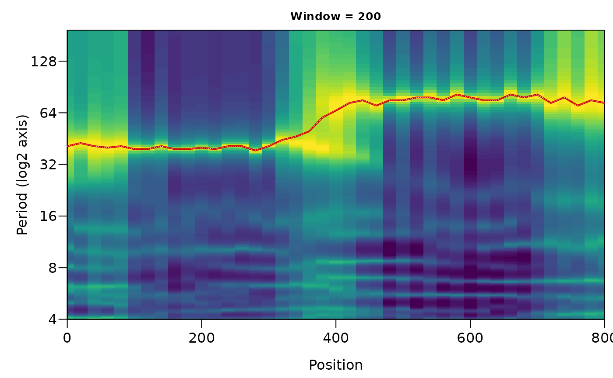

Follows one spectral ridge (for example the 100 ka cycle) through the window
positions of an evolutive MESA (mesa_evolutive). A dynamic-programming search finds
the path through the spectral image that has the highest summed log relative power, with the
frequency allowed to change by at most max_jump (as a fraction of the frequency) from one
position to the next and a penalty for large changes, so that the track does not hop between
neighbouring peaks. Optionally the track is read off the stored peaks instead of the image.
Usage
track_mesa(
x,
window = 1,
period = NULL,
frequency = NULL,
max_jump = 0.1,
penalty = 0.3,
start = NULL,
start_at = c("top", "end"),
snap = TRUE
)Arguments
- x
Evolutive MESA to track in: the output of
mesa_evolutive(list with the elementswindows,frequencyandposition). Required, no default.- window
Which window length of
xto track in (numeric): either the window length itself (in the units of the first column of the record, matched exactly) or the index of the window inx$windows(integer, 1 is the first window length given tomesa_evolutive). A length is matched first.Default=1.- period
Period (wavelength) band in which the ridge is searched (numeric vector
c(lower, upper), in the units of the first column of the record; the band must hold at least three frequencies ofx). Giveperiodorfrequency;frequencytakes precedence when both are given.Default=NULL.- frequency
Frequency band in which the ridge is searched (numeric vector
c(lower, upper), in cycles per unit of the first column of the record), alternative toperiod.Default=NULL.- max_jump
Largest relative change of the frequency between neighbouring window positions (numeric, > 0; 0.1 allows 10 percent); larger values let the track follow faster changes but make hopping between neighbouring peaks easier.
Default=0.1.- penalty
Penalty for a change of the frequency by
max_jump, in units of log10 relative power (numeric, >= 0); smaller changes cost proportionally less (linear in the log of the frequency ratio), 0 means no penalty withinmax_jump.Default=0.3.- start
Optional period (numeric, same units as
period) at the first position (or at the last, ifstart_at = "end") that fixes where the track begins: only frequencies withinmax_jumpof it are allowed there.NULLlets the search start anywhere in the band.Default=NULL.- start_at
Direction of the search (character, one of
"top","end"):"top"starts at the first window position,"end"at the last; this also decides wherestartapplies.Default="top".- snap
Move every position of the track to the largest value of the spectrum within two frequency steps of the path (logical, TRUE or FALSE), so that the track follows the spectral peak and not the shoulder of a broad one.
Default=TRUE.
Value
A data frame of class mesa_track with position, frequency,
period and rel_power (power relative to the maximum at that position), and the
attribute window giving the window length.
Examples
set.seed(2)
t <- seq(0, 800, by = 2)
y <- sin(2 * pi * cumsum(1 / ifelse(t < 400, 40, 80)) * 2) + rnorm(length(t), sd = 0.4)
ev <- mesa_evolutive(data.frame(t, y), window = 200, order = 20)
tr <- track_mesa(ev, period = c(25, 120))
plot_mesa_evolutive(ev, track = tr, vertical = FALSE)
